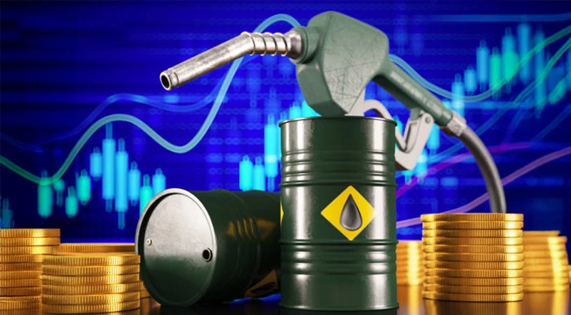

বিশ্ব বাজারে বাড়ল তেলের দাম

মধ্যপ্রাচ্যে তেল সরবরাহে অনিশ্চয়তা তৈরি হতে পারে—এমন আশঙ্কায় বুধবার (১ জুলাই) আন্তর্জাতিক বাজারে অপরিশোধিত তেলের দাম বেড়েছে। ইরান ও যুক্তরাষ্ট্রের মধ্যে যুদ্ধ-পরবর্তী সমঝোতা নিয়ে প্রত্যাশিত অগ্রগতি না হওয়ায় বিনিয়োগকারীদের মধ্যে নতুন উদ্বেগের সৃষ্টি হয়েছে।
বুধবার লেনদেনে আন্তর্জাতিক বাজারে অপরিশোধিত তেলের দাম ব্যারেলপ্রতি ৩৩ সেন্ট বা শূন্য দশমিক ৪৫ শতাংশ বেড়ে দাঁড়িয়েছে ৭৩ দশমিক ২৮ ডলারে। একই সঙ্গে যুক্তরাষ্ট্রের ওয়েস্ট টেক্সাস ইন্টারমিডিয়েট (WTI) তেলের দাম ৩৪ সেন্ট বা শূন্য দশমিক ৪৯ শতাংশ বেড়ে হয়েছে ব্যারেলপ্রতি ৬৯ দশমিক ৮৪ ডলার।
বিশ্লেষকদের মতামত
তেলবাজার বিশ্লেষণ প্রতিষ্ঠান ভান্ডা ইনসাইটসের প্রতিষ্ঠাতা বন্দনা হারি জানান, হরমুজ প্রণালী দিয়ে জাহাজ চলাচল স্বাভাবিক হলেও পরিস্থিতি এখনো পুরোপুরি স্থিতিশীল নয়। ওয়াশিংটন ও তেহরানের মধ্যে নতুন কোনো সমঝোতা না হওয়া পর্যন্ত বাজার পরিস্থিতি সতর্ক পর্যবেক্ষণে থাকবে এবং তেলের দামে বড় ধরনের পতন আপাতত সম্ভাবনা কম।
কূটনৈতিক তৎপরতা
যুক্তরাষ্ট্রের প্রেসিডেন্ট ডোনাল্ড ট্রাম্পের জামাতা জ্যারেড কুশনার এবং বিশেষ দূত স্টিভ উইটকফ কাতারের দোহায় পৌঁছেছেন। হোয়াইট হাউস একে ‘উচ্চপর্যায়ের’ আলোচনা বললেও ইরান ও কাতার জানিয়েছে, মার্কিন প্রতিনিধিদল সরাসরি ইরানি কর্মকর্তাদের সঙ্গে নয়, বরং মধ্যস্থতাকারীদের মাধ্যমেই বৈঠক করবে। কাতারের প্রধানমন্ত্রী শেখ মোহাম্মদ বিন আবদুর রহমান আল-থানি এসব আলোচনায় অংশ নিয়েছেন।
বাজারের সামগ্রিক পরিস্থিতি
বছরের প্রথম দুই প্রান্তিকে আন্তর্জাতিক বাজারে অপরিশোধিত তেলের দাম প্রায় ৪৫ ডলার কমেছে, যা ২০০৮ সালের পর সবচেয়ে বড় ত্রৈমাসিক পতন। এছাড়া যুক্তরাষ্ট্রের মজুত ভাণ্ডারেও টান পড়েছে। আমেরিকান পেট্রোলিয়াম ইনস্টিটিউটের তথ্যমতে, ২৬ জুন শেষ হওয়া সপ্তাহে দেশটির অপরিশোধিত তেলের মজুত ৬১ লাখ ব্যারেল কমেছে। এদিকে, যুক্তরাষ্ট্রের ভাইস প্রেসিডেন্ট জেডি ভ্যান্স স্পষ্ট জানিয়েছেন, হরমুজ প্রণালী দিয়ে চলাচলে ইরানকে কোনো প্রকার টোল আদায় করতে দেওয়া হবে না। সামগ্রিক পরিস্থিতিতে বিশ্লেষকরা ২০২৬ সালের তেলের মূল্যের পূর্বাভাস কিছুটা কমিয়ে এনেছেন।